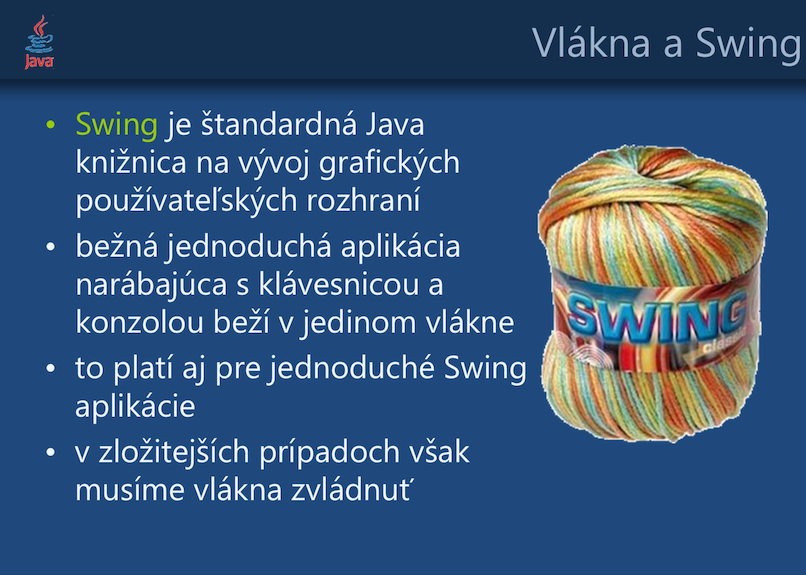
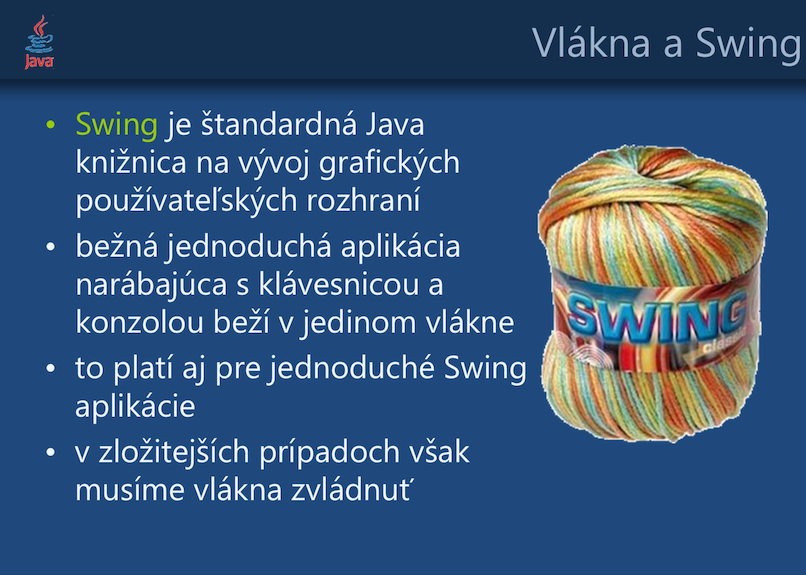

Ako korektne programovať dlhotrvajúce operácie v Swing GUI?
Stiahnuť

Obsah
- Swing a vlákna.
- Problém s Event Dispatch Thread.
- Metóda
invokeLater() - Trieda
SwingWorker
Ako korektne programovať dlhotrvajúce operácie v Swing GUI?

invokeLater()SwingWorker